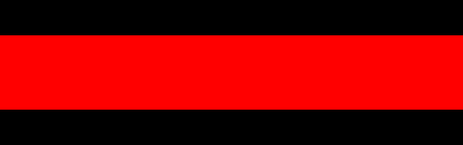
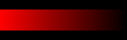

Computers are powerful because they're very good at repeating code. A good programmer can take advantage of this by designing algorithms that have repeated processes to complete their code for them.
The draw function is one type of code that is designed to be repeated infinitely.
Assume that you want to create a bar of randomly colored lines on the screen. Each line should have a different random color. The copy-paste solution might look like the following:
stroke(random(256),random(256),random(256)); line(0, 50, 0, 150); stroke(random(256),random(256),random(256)); line(1, 50, 1, 150); stroke(random(256),random(256),random(256)); line(2, 50, 2, 150); stroke(random(256),random(256),random(256)); line(3, 50, 3, 150); stroke(random(256),random(256),random(256)); line(4, 50, 4, 150); stroke(random(256),random(256),random(256)); line(5, 50, 5, 150); stroke(random(256),random(256),random(256)); line(6, 50, 6, 150); stroke(random(256),random(256),random(256)); line(7, 50, 7, 150); stroke(random(256),random(256),random(256)); line(8, 50, 8, 150); stroke(random(256),random(256),random(256)); line(9, 50, 9, 150); ... I give up
All that code will draw about ten vertical lines. If the bar is supposed to be 300 wide, my copy-paste button will break.
Thinking with iteration is often about thinking of the patterns that appear in the code. Really there's only two lines of code that are repeating.
stroke(random(256),random(256),random(256)); line(0, 50, 0, 150); stroke(random(256),random(256),random(256)); line(1, 50, 1, 150); stroke(random(256),random(256),random(256)); line(2, 50, 2, 150);
There are lots of numbers that are in each line, but if you focus on the ones that are different each time, you can see a pattern arising. The x coordinate of each line is 0, 1, 2, 3, 4, 5, 6, 7, 8, 9, etc...
This is a number pattern that we can model with a variable. Here we can see that we have a number that increases by one each time.
Here's a solution that will draw one line each draw loop. The x variable starts at 0 and is increased by 1 each time.
let x;
function setup() {
createCanvas(400, 200);
frameRate(15);
strokeWeight(3);
background(0);
//Initial Value For x
x = 0;
}
function draw() {
//Use current x to draw
stroke(random(256), random(256), random(256));
line(x, 50, x, 150);
//Change x a little bit for next time
x = x + 1;
}
The draw function is set up to do one line at a time. The background statement has been moved to the setup so that it only happens in the beginning.
Right now the code above starts a vertical bar at 0, and increases by one each time. The effect is that the bar 'grows' from left to right.
Your task is to modify the code to go backwards, starting at the right and working your way leftward. This will require two changes to the code above.
Our number patterns so far have had custom starting points and 'directions' (up or down), but sometimes we need to provide a stopping point. Consider if we wanted our previous demo to draw in the x range from 100 to 300.
We can start the x at 100 easily enough by setting it in our setup function.
let x;
function setup() {
createCanvas(400, 200);
frameRate(15);
strokeWeight(3);
background(0);
//Initial Value For x
x = 100;
}
function draw() {
//Use current x to draw
stroke(random(256), random(256), random(256));
line(x, 50, x, 150);
//Change x a little bit for next time
x = x + 1;
}
The draw function will be constantly called by the computer. In order to limit what it does each time, we're going to use an if statement around our code that checks to see if our process should keep going.
let x;
function setup() {
createCanvas(400, 200);
frameRate(115);
strokeWeight(3);
background(0);
//Initial Value For x
x = 100;
}
function draw() {
if (x < 300) {
//Use current x to draw
stroke(random(256), random(256), random(256));
line(x, 50, x, 150);
//Change x a little bit for next time
x = x + 1;
}
}
The red if statement says that our iterating pattern should keep going as long as x is less than 300 it will continue to grow.
In the demo above the if statement (x < 300) is meant to check if the loop should keep going. As long as x is small, x<300 is true and a line will be drawn and x willincrease. Only when x reaches 300 (which is not less than 300) does the loop actually stop responding because the if statement stops being true.
Often times we mistake this for checking 'should I stop' . People often think "x is starting at 100 and going UNTIL x is past 300" and incorrectly use if(x > 300). This is false from the beginning, so no lines are drawn and x never changes.
Recreate the sketch above. Each time the draw function runs it draws one ellipse (no fill). You should use a variable to represent the diameter of the ellipse and think about where it starts, what changes each time, and use a permissive if statement to limit its range so that it doesn't keep going.
We frequently go up by one, but other patterns often appear.
Assume that we want the following pattern:
There are six squares, which could be drawn using copy-paste:
rect(20,20,60,60); rect(80,20,60,60); rect(140,20,60,60); rect(200,20,60,60); rect(260,20,60,60); rect(320,20,60,60);
Instead, lets us a number patten to generate these values. Looking above, the only thing that needs changing is the x coordinate of the rectangles. The pattern breaks down as follows:
First Value: 20
Change Each Time: 60
Last Value: 320
let x;
function setup() {
createCanvas(400, 100);
rectMode(CORNER);
frameRate(5);
background(0);
x = 20;
}
function draw() {
if( x <= 320 ){
rect(x,20,60,60);
x+=60;
}
}
Here the x is set up to start at 20, and increase by 60 each time. Once it's larger than 320 the lines will stop drawing.
This sketch only needs one iterating variable, but you can use two if you like. Each time the draw function iterates, a vertical and horizontal line are drawn. Make sure that you have limited your variables using an if statement.
Often Times an iterative process will involve two variables that change in different ways.
Open the Fade Out workspace in CodeHS, which currently uses a number pattern to draw a red streak across the canvas

Your task is to modify the sketch so that it fades from red to black.

This means that each line drawn needs to have a different red value, which will require a second number pattern representing the red value of the stroke.
Create another variable, redVal, which starts at 255 and decreases by 1 each time the draw function runs. Then modify the call to stroke() to use redVal as the first parameter.
You will not need a new permissive if statement to accomplish this. Since this pattern should go just as many times as the already existing pattern, you can simply use the already existing if statement.
For this sketch you will need to use a number pattern to create a list of numbers on the canvas. This is. The two changing values are the y location of the number and the number itself. Create variables for both and think about each of their initial values, as well as how much they need to change each step
We've previously looked at how to use sin() and cos() to generate a point on circle with a given center point, radius, and angle:
let x = centerX + radius*cos(angle);
let y = centerY + radius*sin(angle);
In order to create a spiral generator, we need to think of it as a circle whose radius is continually increasing as its angle is also increasing.
Start with the following sketch:
function setup() {
createCanvas(400, 400);
angleMode(DEGREES);
background(0);
noStroke();
}
function draw() {
let x = 200 + radius*cos(angle);
let y = 200 + radius*sin(angle);
}
The two lines in the draw function will not function properly yet because they rely on a radius and angle variable that don't exist. Add both of them to the sketch as global variables and initialize them to 0 in the setup function. This will fix the two lines in the draw function. You should now use the x and y created by those two lines to draw a small circle at that location.
Since the angle and radius variables are stuck at zero, the circle will only be drawn in the center and it won't be very impressive. We want each circle to be drawn at a slightly larger angle and with a slightly larger radius. Modify the draw function to increase both variables by 1 and test it out. You'll see that increasing the radius and the angle at the same exact pace doesn't cause a very tight spiral. Instead modify your code so that the radius increases much slower. In the example above the radius increases at .1 for every 1 angle. Yours doesn't have to be exactly that.